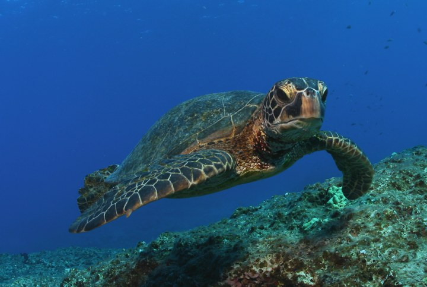

Ararinhas-azuis nascem em vida livre
Em 2023, nasceram os primeiros filhotes em vida livre após a reintrodução da espécie, um marco para sua conservação.
Saiba mais no ICMBioBoas notícias sobre meio ambiente, responsabilidade social e governança.
Ver as notíciasEm 2023, nasceram os primeiros filhotes em vida livre após a reintrodução da espécie, um marco para sua conservação.
Saiba mais no ICMBio